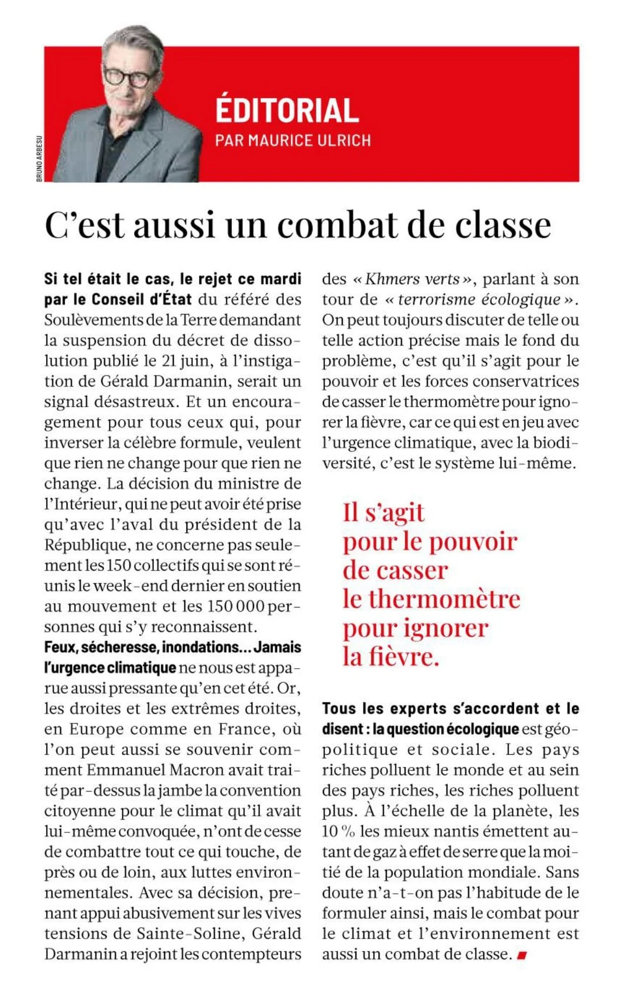

Le combat pour le climat et l'environnement est aussi un combat de classe. @humanite_fr
Le combat pour le climat et l'environnement est aussi un combat de classe.
Date indiquée par Facebook · 9 août 2023
Texte conservé avec la publication
Le combat pour le climat et l'environnement est aussi un combat de classe.
@humanite_fr

Sources
Archive rouge · export Facebook · AR-0002-FB-01603
À lire aussi · L’Arenh ou le pacte des profiteurs de crise